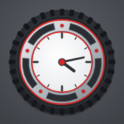

AhrouChoisis un sens de synchronisation avec Google Drive.
Une question, un souci, une idée d'amélioration ? Écris-nous, nous te répondrons dès que possible.
✉️ Envoyer un e-mail Ton numéro client et la version de l'appli sont ajoutés automatiquement au message, pour qu'on puisse t'aider plus vite. Règles de confidentialité